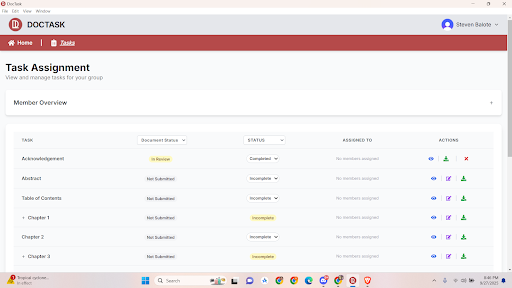
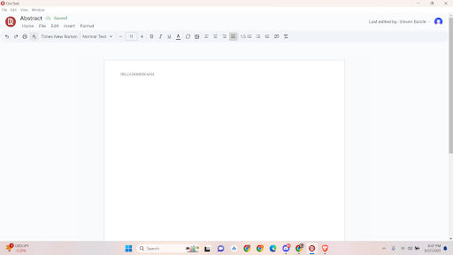
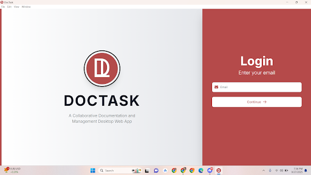

Projects / DocTask
DocTask
Capstone PWA • December 2024 — November 2025
Overview
DocTask is a progressive web application for collaborative documentation and project management for capstone projects. This static demo highlights the key modules and UI patterns.
Main Modules
- Project workspace and member access
- Documentation editor and file organization
- Task board (To-do / In progress / Done)
- Activity feed and notifications
Demo Screens (Static)
Dashboard

Task Board

Docs

Users & Roles
